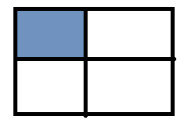
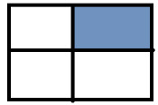
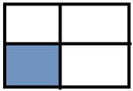
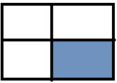

Задачі для перевірки
1.Знайти суми елементів у вказаній області
Task 1

Task 2

Task 3

Task 4

Task 5
Суму парних рядків
Task 6
Суму непарних стовпців
Task 7
У парних рядках – непарні стовпці, у непарних – парні.
2.Дано інформацію про прибуток К магазинів протягом тижня.
Task 2
Загальний прибуток усіх магазинів по дням (загальний прибуток усіх магазинів за понеділок, за вівторок, і т.д.);
Task 3
Загальний прибуток за робочі дні
Task 5
максимальний прибуток за середу
Task 7
відсортувати кожен тиждень за зростанням
Task 3
Задача 3. Морський бій. Випадковим чином на двовимірному полі розміром 6*6 розташовується 5 кораблів. Користувач стріляє вказуючи координати. Гра продовжується поки не потоплено усі кораблі або у користувача не закінчаться снаряди.
Додаткові задачі
Task 1
Загальний прибуток кожного масиву за тиждень;
Task 4
Загальний прибуток за вихідні дні
Task 6
сформувати загальний список (одновимірний масив) зі значенням, які що більші за 200